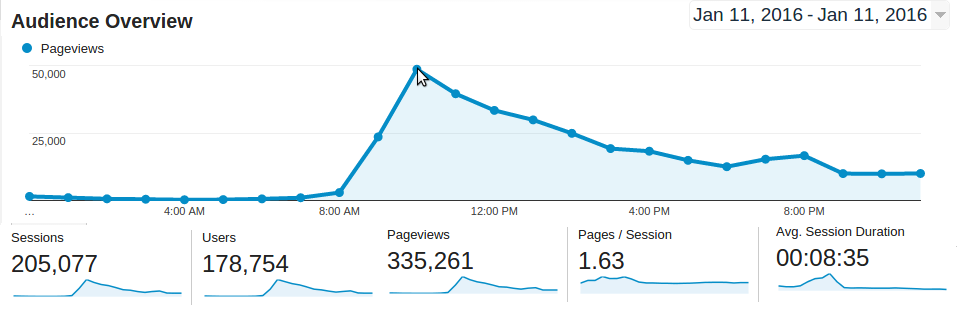
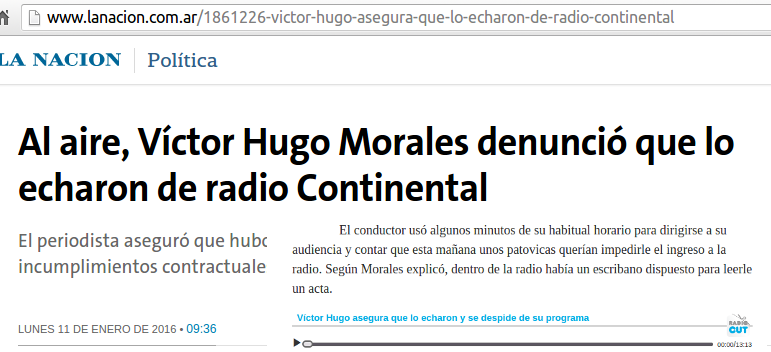

RADIOCUT
All the radio to rewind, listen and share

Vision
Traction

- 10-15% monthly growth since Feb 2014
- 1.2 Million sessions per month
- 12.000 cuts per month
- #3 th radio web site by Alexa in Argentina
- Industry recognition: Éter Prize
Sharing and virality with Radiocut - A real example
|  |  |
Market Oportunity


- On demand access
- All in one site
- People love radio
The Problem
People want to listen to music when ever they want and share it
Current Solutions
Radio stations web sites
Hard to admin. Listeners don't have all in one |
Podcasting
Don't have radio content |
The Product
RadioCut is a platform where you can listen to past and present radio shows and you can cut and share radio segments you enjoy with your friends.

Revenue Model
Freemium
Revenue = 3 x infrastructure costs
| Current metrics | Other revenues |
|
1.2 million monthly visits / 2.5 M pageviews 688 radio stations Cuts: 12.000 per month Users: 30.000 registered. 4.000 active. 120 Premium 3 monitoring service company customers |
Private services for media monitoring companies Services for radio stations and radio shows. |
Revenue Model
Freemium
Revenue = 3 x infrastructure costs
Other revenues
- Private services for media monitoring companies
- Services for radio stations and radio shows.
Current metrics
- 1.2 million monthly visits / 2.5 M pageviews
- 688 radio stations
- Cuts: 12.000 per month
- Users: 30.000 registered. 4.000 active
- 120 premium users. 10 $ p/month
- 3 monitoring service company customers
Marketing and Growth Strategy
- People love that their work is mentioned
- Social networks, yet automated. Focus in radio workers.
- Radio stations need a new distribution channel
- Comunication team
Team
Guillermo Narvaja: CEO, software developer, product manager
Milena Armada: Software developer, team leader

Experience in long term projects. Technical and business skills |
Impetus to start another project completely different and innovator |
Market Oportunity
Alexa Ranking - Internet users
 Argentina Argentina |
 USA USA |
||
| #448 other.com |  |
#448 other.com | |
| #448 other.com | #448 other.com | ||
| #448 other.com | #448 other.com | ||
| #448 other.com | #448 other.com | ||
| #448 other.com | #448 other.com |